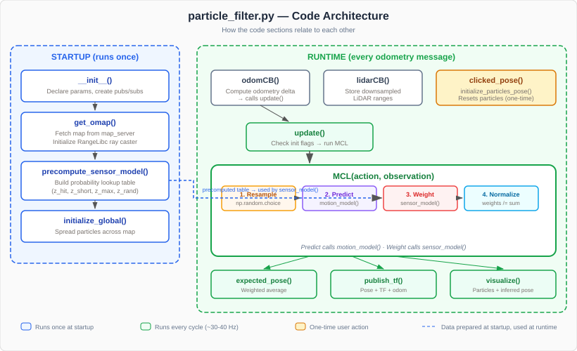
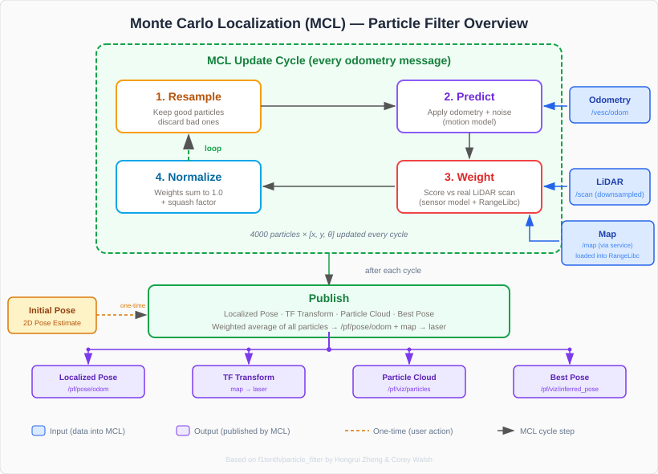

Understanding the Particle Filter Code¶
This page walks through the key sections of particle_filter.py — the standalone Monte Carlo Localization node used on the F1TENTH RoboRacer. The goal is to understand what each piece does and why, so you can reason about the filter’s behavior when tuning or debugging.
The Big Picture¶
The particle filter answers one question: “Where am I on this map?” It does this by maintaining thousands of guesses (particles) about the car’s pose and refining them every time new sensor data arrives.
Each update cycle follows four steps:
Resample — duplicate good particles, discard bad ones
Predict — move every particle according to odometry (with noise)
Weight — score each particle by comparing its simulated LiDAR to the real scan
Normalize — divide weights by their sum so they form a proper probability distribution
After each cycle, the filter computes the weighted average of all particles and publishes the best estimated pose.
This is the MCL() method at the heart of the node.
The diagram below shows how the code is organized — what runs once at startup versus what runs every cycle, and how the methods connect to each other:


The next diagram expands on the simplified cycle from the previous page, showing the full data flow including inputs, outputs, and where RangeLibc fits in.


Outputs¶
The particle filter publishes four outputs. The first two are data outputs used by other nodes (pure pursuit, waypoint logger). The last two are visualization outputs for RViz2.
- Localized Pose —
/pf/pose/odom(Odometry) The filter’s best estimate of where the car is on the map. This is what your pure pursuit node or waypoint logger subscribes to. Includes position (x, y), heading, speed, and a covariance matrix indicating confidence.
- TF Transform —
map→laser(TF) Tells ROS the car’s position on the map by publishing a transform directly from
maptolaser. This is a shortcut — a standard ROS TF tree would gomap→odom→base_link→laser, but this particle filter skips the intermediate frames and connectsmaptolaserdirectly. This works because the particle filter already accounts for the full pose. Without this transform, the map and LiDAR scans would not align in RViz2.- Particle Cloud —
/pf/viz/particles(PoseArray) The current set of particle hypotheses, displayed as arrows in RViz2. A tight cluster means the filter is confident. A spread-out cloud means it is still searching. Useful for diagnosing localization issues.
- Best Pose —
/pf/viz/inferred_pose(PoseStamped) A single arrow in RViz2 showing the weighted average pose. This is the same value published on
/pf/pose/odombut as a simpler message type for easy visualization.
Initialization¶
self.particles = np.zeros((self.MAX_PARTICLES, 3))
self.weights = np.ones(self.MAX_PARTICLES) / float(self.MAX_PARTICLES)
Each particle is a 3-element array: [x, y, theta]. Weights start equal — every particle is equally likely. MAX_PARTICLES (default 4000) controls the tradeoff between accuracy and CPU cost.
When you click 2D Pose Estimate in RViz2, initialize_particles_pose() is called:
self.particles[:,0] = pose.position.x + np.random.normal(loc=0.0, scale=0.5, size=self.MAX_PARTICLES)
self.particles[:,1] = pose.position.y + np.random.normal(loc=0.0, scale=0.5, size=self.MAX_PARTICLES)
self.particles[:,2] = Utils.quaternion_to_angle(pose.orientation) + np.random.normal(loc=0.0, scale=0.4, size=self.MAX_PARTICLES)
This scatters particles in a Gaussian cloud around where you clicked. The scale values (0.5 m for position, 0.4 rad for heading) control how spread out the initial guess is.
Motion Model¶
def motion_model(self, proposal_dist, action):
cosines = np.cos(proposal_dist[:,2])
sines = np.sin(proposal_dist[:,2])
self.local_deltas[:,0] = cosines*action[0] - sines*action[1]
self.local_deltas[:,1] = sines*action[0] + cosines*action[1]
self.local_deltas[:,2] = action[2]
proposal_dist[:,:] += self.local_deltas
proposal_dist[:,0] += np.random.normal(loc=0.0, scale=self.MOTION_DISPERSION_X, size=self.MAX_PARTICLES)
proposal_dist[:,1] += np.random.normal(loc=0.0, scale=self.MOTION_DISPERSION_Y, size=self.MAX_PARTICLES)
proposal_dist[:,2] += np.random.normal(loc=0.0, scale=self.MOTION_DISPERSION_THETA, size=self.MAX_PARTICLES)
What it does: Takes the odometry delta (how much the car moved since the last update) and applies it to every particle. The rotation into each particle’s frame is critical — action is in the car’s local frame, but each particle has a different heading.
Why the noise? Odometry is never perfect — wheels slip, encoders have error. Adding Gaussian noise spreads the particles slightly so they explore nearby poses. MOTION_DISPERSION_THETA is the most important tuning knob here — if the filter diverges at speed, increase it.
Why vectorized? This operates on all 4000 particles at once using NumPy. Doing it in a Python for loop would be ~1000x slower.
Sensor Model¶
The sensor model answers: “How well does this particle’s position explain the actual LiDAR scan?”
Precomputed Lookup Table¶
def precompute_sensor_model(self):
for d in range(table_width): # d = expected (computed) range
for r in range(table_width): # r = observed (measured) range
prob = 0.0
z = float(r - d)
# Gaussian: measurement matches expected range
prob += z_hit * np.exp(-(z*z)/(2.0*sigma_hit*sigma_hit)) / (sigma_hit * np.sqrt(2.0*np.pi))
# Short reading (obstacle between car and wall)
if r < d:
prob += 2.0 * z_short * (d - r) / float(d)
# Max range (LiDAR returned max — no return)
if int(r) == int(self.MAX_RANGE_PX):
prob += z_max
# Random measurement (noise)
if r < int(self.MAX_RANGE_PX):
prob += z_rand * 1.0/float(self.MAX_RANGE_PX)
This builds a table before the filter starts running. For every possible (expected range, observed range) pair, it precomputes the probability. This avoids expensive math during the real-time loop.
The four probability components model real LiDAR behavior:
Component |
What It Models |
Weight Parameter |
|---|---|---|
|
Measurement matches expected range (Gaussian) |
How much to trust accurate readings |
|
Something blocked the beam early (person, box) |
How much to expect short readings |
|
LiDAR returned max range (no return signal) |
How much to expect max-range readings |
|
Random noise / multipath reflections |
Background noise level |
Runtime Evaluation¶
At runtime, the sensor model uses RangeLibc to simulate what each particle would see, then compares that to what the LiDAR actually saw:
# Simulate LiDAR from each particle's position
self.range_method.calc_range_repeat_angles(self.queries, self.downsampled_angles, self.ranges)
# Score: how well does simulated scan match real scan?
self.range_method.eval_sensor_model(obs, self.ranges, self.weights, num_rays, self.MAX_PARTICLES)
# Squash factor — prevents any single particle from dominating
np.power(self.weights, self.INV_SQUASH_FACTOR, self.weights)
The squash factor is important: without it, one particle could get a weight millions of times larger than others, causing the filter to collapse onto a single hypothesis. The squash factor (raising weights to a power < 1) flattens the distribution to keep diversity.
The MCL Loop¶
def MCL(self, a, o):
# 1. Resample: draw particles proportional to their weights
proposal_indices = np.random.choice(self.particle_indices, self.MAX_PARTICLES, p=self.weights)
proposal_distribution = self.particles[proposal_indices,:]
# 2. Predict: apply motion model
self.motion_model(proposal_distribution, a)
# 3. Weight: apply sensor model
self.sensor_model(proposal_distribution, o, self.weights)
# 4. Normalize: weights must sum to 1
self.weights /= np.sum(self.weights)
self.particles = proposal_distribution
This is the complete algorithm in four lines of real work:
Resample —
np.random.choicewithp=self.weightspicks particles proportional to their weight. Good particles get duplicated; bad ones disappear.Predict — the motion model moves each particle and adds noise.
Weight — the sensor model scores each particle against the real LiDAR scan.
Normalize — divide all weights by their sum so they form a proper probability distribution.
The expected_pose() method then computes the weighted average:
def expected_pose(self):
return np.dot(self.particles.transpose(), self.weights)
This is a dot product — each particle’s (x, y, theta) multiplied by its weight and summed. The result is the best single pose estimate.
Update Trigger¶
def odomCB(self, msg):
# ... compute local delta from odometry ...
self.update()
The filter runs on every odometry message (not every LiDAR message). Odometry arrives slower than LiDAR, and each update needs both odometry and LiDAR data. The update() method checks that all three data sources are initialized before running MCL:
if self.lidar_initialized and self.odom_initialized and self.map_initialized:
TF and Odometry Output¶
def publish_tf(self, pose, stamp=None):
t = TransformStamped()
t.header.frame_id = '/map'
t.child_frame_id = '/laser'
t.transform.translation.x = pose[0]
t.transform.translation.y = pose[1]
The particle filter publishes a TF transform directly from map to laser, skipping the usual map → odom → base_link → laser chain. This works because the particle filter computes the car’s full pose on the map — there is no need for the intermediate frames. It also publishes the pose as an Odometry message on /pf/pose/odom — this is what your pure pursuit node subscribes to.
Note
Nav2’s AMCL takes the standard approach and publishes map → odom, relying on the existing odom → base_link → laser chain from the robot’s odometry. This is one reason you cannot run both AMCL and the standalone particle filter at the same time — they both try to define the map frame, causing a TF conflict.
The odometry message includes the covariance computed from the particle distribution:
cov_mat = np.cov(self.particles, rowvar=False, ddof=0, aweights=self.weights).flatten()
odom.pose.covariance[:cov_mat.shape[0]] = cov_mat
This tells downstream nodes how confident the filter is. A tight particle cloud = low covariance = high confidence.
Map and RangeLibc¶
def get_omap(self):
# Fetch map from map_server
oMap = range_libc.PyOMap(map_msg)
self.MAX_RANGE_PX = int(self.MAX_RANGE_METERS / self.map_info.resolution)
# Initialize ray casting engine
if self.WHICH_RM == 'rmgpu':
self.range_method = range_libc.PyRayMarchingGPU(oMap, self.MAX_RANGE_PX)
The map is fetched from map_server via a service call, then loaded into RangeLibc. RangeLibc is a compiled C++/CUDA library that performs fast ray casting — simulating thousands of LiDAR scans per update cycle. On the Jetson Orin with rmgpu, this runs on the GPU for maximum speed.
LiDAR Downsampling¶
self.downsampled_angles = np.copy(self.laser_angles[0::self.ANGLE_STEP]).astype(np.float32)
The ANGLE_STEP parameter (default 18) takes every 18th LiDAR ray instead of all ~1080. This dramatically reduces computation while retaining enough angular coverage for accurate localization. Increasing ANGLE_STEP makes the filter faster but less precise.
Key Takeaways¶
The particle filter is embarrassingly parallel — every particle is independent, which is why NumPy vectorization and GPU ray casting provide massive speedups.
The motion model adds noise on purpose — this is how the filter explores the space and recovers from errors.
The sensor model is precomputed as a lookup table — runtime evaluation is just table indexing, not probability math.
The squash factor prevents particle collapse — without it, the filter would quickly converge to a single point and lose the ability to self-correct.
The filter publishes
maptolaserTF and/pf/pose/odom— these are what your nodes use for localization.